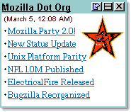

|
My Mozilla My Netscape is a service that lets you create a custom home page with headlines from different web sites that update automatically. This can be a nice way to keep track of the latest changes in web sites you visit regularly. We at mozilla.org have created some channels to help keep track of our latest news as well as the status of the tree. Some developers have created channels for their own areas and Chris Nelson has a channel for mozillaZine a site he created devoted to Mozilla news and opinions. For more geek channels check out the listings at the Open Directory Project. These channels are implemented using RDF. Other users of this data include my.userland.com, slashdot.org, and mozbot, our irc robot which announces new headlines to the #mozilla channel on our irc server at irc.mozilla.org. Registered slashdot readers can customize it to display headlines from other sites including mozillaZine, newsbot and the mozilla home page. Feel free to invent your own uses for this data. If you make anything interesting, let me know.
|
|||||||||||||
|
Copyright © 1998-1999 The Mozilla Organization.
Last modified April 24, 1999. |
|||||||||||||